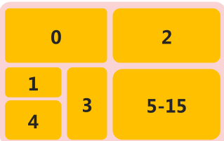
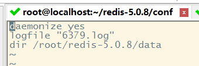
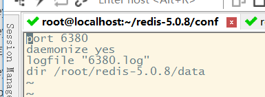

rides的学习与使用
1.key通用操作
1-1.key 特征
key是一个字符串，通过key获取redis中保存的数据
key应该设计哪些操作？
- 对于key自身状态的相关操作，例如：删除，判定存在，获取类型等
- 对于key有效性控制相关操作，例如：有效期设定，判定是否有效，有效状态的切换等
- 对于key快速查询操作，例如：按指定策略查询key
1-2.key 基本操作
1 | set str str |
- 删除指定key
1 | del key |
- 获取key是否存在
1 | exists key |
- 获取key的类型
1 | type key |
- 为指定key设置有效期
1 | expire key seconds |
- 获取key的有效时间
1 | ttl key |
- 切换key从时效性转换为永久性
1 | persist key |
- 查询key
1 | keys pattern |
- 查询模式规则
1 | * 匹配任意数量的任意符号 |
| keys * | 查询所有 |
|---|---|
| keys it* | 查询所有以it开头<br/ |
| keys *heima | 查询所有以heima结尾 |
| keys ??heima | 查询所有前面两个字符任意，后面以heima结尾 |
| keys user:? | 查询所有以user:开头，最后一个字符任意 |
| keys u[st]er:1 | 查询所有以u开头，以er:1结尾，中间包含一个字母，s或t |
1 | 127.0.0.1:6379> set str str |
- 为key改名
1 | rename key newkey |
- 对所有key排序
1 | sort |
- 其他key通用操作
1 | help @generic |
2.数据库通用操作
2-1.key 的重复问题
- key是由程序员定义的
- redis在使用过程中，伴随着操作数据量的增加，会出现大量的数据以及对应的key
- 数据不区分种类、类别混杂在一起，极易出现重复或冲突
解决方案：
- redis为每个服务提供有16个数据库，编号从0到15
- 每个数据库之间的数据相互独立

2-2.db 基本操作
切换数据库
1 | select index |
其他操作
1 | quit |
数据移动
1 | move key db |
数据清除
1 | dbsize -->看数据库里有多少key |
3.Jedis
3-1.编程语言与redis
Java语言连接redis服务：Jedis
3-2.项目练习
- jar包导入
下载地址：https://mvnrepository.com/artifact/redis.clients/jedis
- 基于maven
1 | <dependency> |
代码：String、list、hash
1 | public class JedisTest { |
3-3.项目案例：服务调用次数控制
人工智能领域的语义识别与自动对话将是未来服务业机器人应答呼叫体系中的重要技术，百度自研用户评价语义识别服务，免费开放给企业试用，同时训练百度自己的模型。现对试用用户的使用行为进行限速，限制每个用户每分钟最多发起10次调用
案例要求
- 设定A、B、C三个用户
- A用户限制10次/分调用，B用户限制30次/分调用，C用户不限制
需求分析
- 设定一个服务方法，用于模拟实际业务调用的服务，内部采用打印模拟调用
- 在业务调用前服务调用控制单元，内部使用redis进行控制，参照之前的方案
- 对调用超限使用异常进行控制，异常处理设定为打印提示信息
- 主程序启动3个线程，分别表示3种不同用户的调用
要求
- 后续1：对业务控制方案进行改造，设定不同用户等级的判定（做到）
- 后续2：将不同用户等级对应的信息、限制次数等设定到redis中，使用hash保存
业务层
1 | public class Service { |
线程+main
1 | public class MyThead implements Runnable{ |
3-4.Jedis简易工具类开发
- 封装连接参数： jedis.properties
1 | =127.0.0.1 |
- 工具类
1 | public class JedisUtils { |
替换
1 | //Jedis jedis = new Jedis("127.0.0.1",6379); |
3-5.可视化客户端
Redis Desktop Manager
Redis可视化工具Redis Desktop Manager 2019.0
4.基于Linux环境安装Redis
4-1.基于Center OS7安装Redis
- 打开linux，我用SecureCRT工具，打开官网，看代码
1 | wget http://download.redis.io/releases/redis-5.0.8.tar.gz |
- 因为个人刚搞linux，没有安装gcc，报错，所以要安装
1 | ... |
- 参考
安装redis出现cc adlist.o /bin/sh:1:cc:not found的解决方法
4-2.实验
1.登录验证
1 | cd redis-5.0.8 |
2.换端口
1 | cd redis-5.0.8 |
3.查看配置文件，配置文件启动
1 | [root@localhost redis-5.0.8] |

- 补充：创建个目录，放配置文件
1 | mkdir data |
- 启动
1 | redis-server redis-6379.conf |
4.多个配置文件，转移到conf
1 | mkdir conf |

5.启动
1 | redis-server conf/redis-6379.conf |
4-3.理论
1.Redis基础环境设置
- 创建软链接
- ln -s 原始目录名 快速访问目录名
- 创建配置文件管理目录
- mkdir conf
- mkdir config
- 创建数据文件管理目录
- mkdir data
2.Redis服务启动
- 默认配置启动
- redis-server
- redis-server –-port 6379
- redis-server –-port 6380 ……
- 指定配置文件启动
- redis-server redis.conf
- redis-server redis-6379.conf
- redis-server redis-6380.conf ……
- redis-server conf/redis-6379.conf
- redis-server config/redis-6380.conf ……
3.Redis客户端连接
- 默认连接
- redis-cli
- 连接指定服务器
- redis-cli -h 127.0.0.1
- redis-cli –port 6379
- redis-cli -h 127.0.0.1 –port 6379
4.Redis服务端配置
- 基本配置
- daemonize yes： 以守护进程方式启动，使用本启动方式，redis将以服务的形式存在，日志将不再打印到命令窗口中
- port 6***：设定当前服务启动端口号
- dir “/自定义目录/redis/data“： 设定当前服务文件保存位置，包含日志文件、持久化文件（后面详细讲解）等
- logfile “6***.log“： 设定日志文件名，便于查阅